We compose living architecture for discerning collectors across the Bay Area. Merging unruly garden forage with architectural restraint in deep crimson, oxblood, and verdant forest tones.
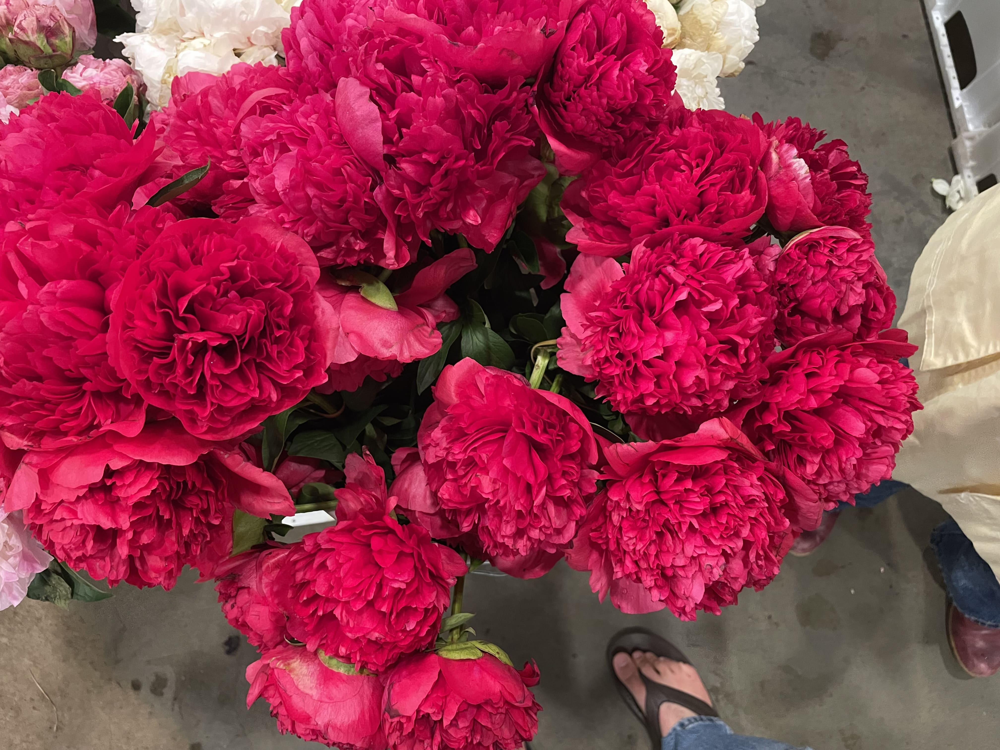
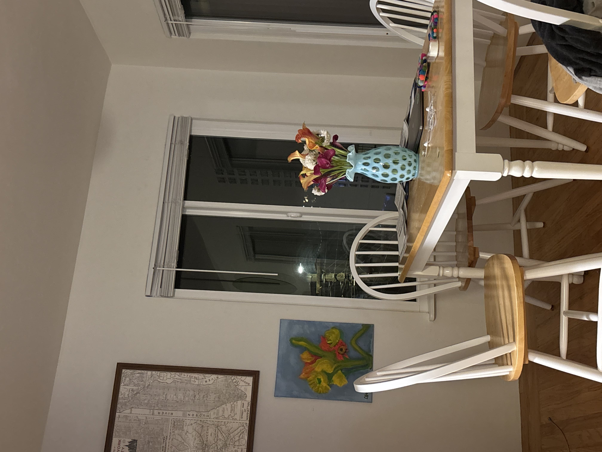
Founded in the rhythm of Northern California’s fog and light, Casey Scaduto Floral approaches botanical design with an editorial eye and an uncompromising reverence for seasonal agriculture.
Every stem is hand-selected from boutique coastal farms and sustainable growers. We reject sterile symmetry in favor of organic movement, allowing dark oxblood roses, cascading ranunculus, and heavy verdant foliage to tell an unscripted story of time, texture, and place.
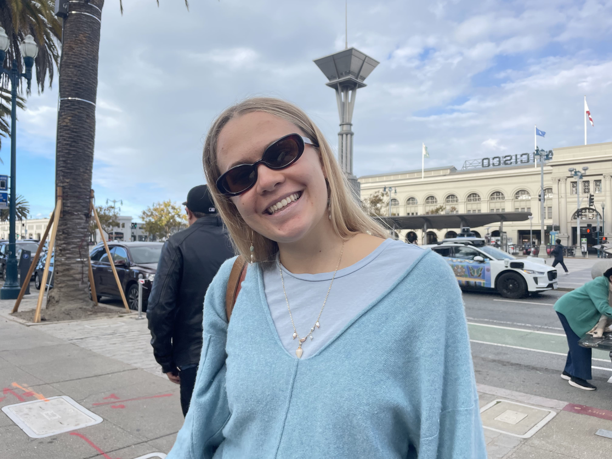
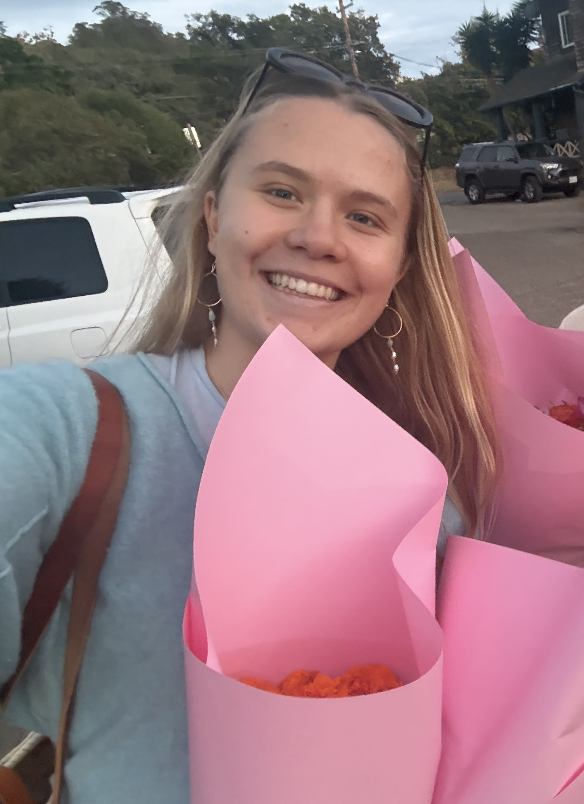
Available for local Bay Area delivery or studio pickup. Each vessel is individually curated.
A raw, unfiltered look at multi-vase table compositions, morning peony studies, and coastal foraging sessions.
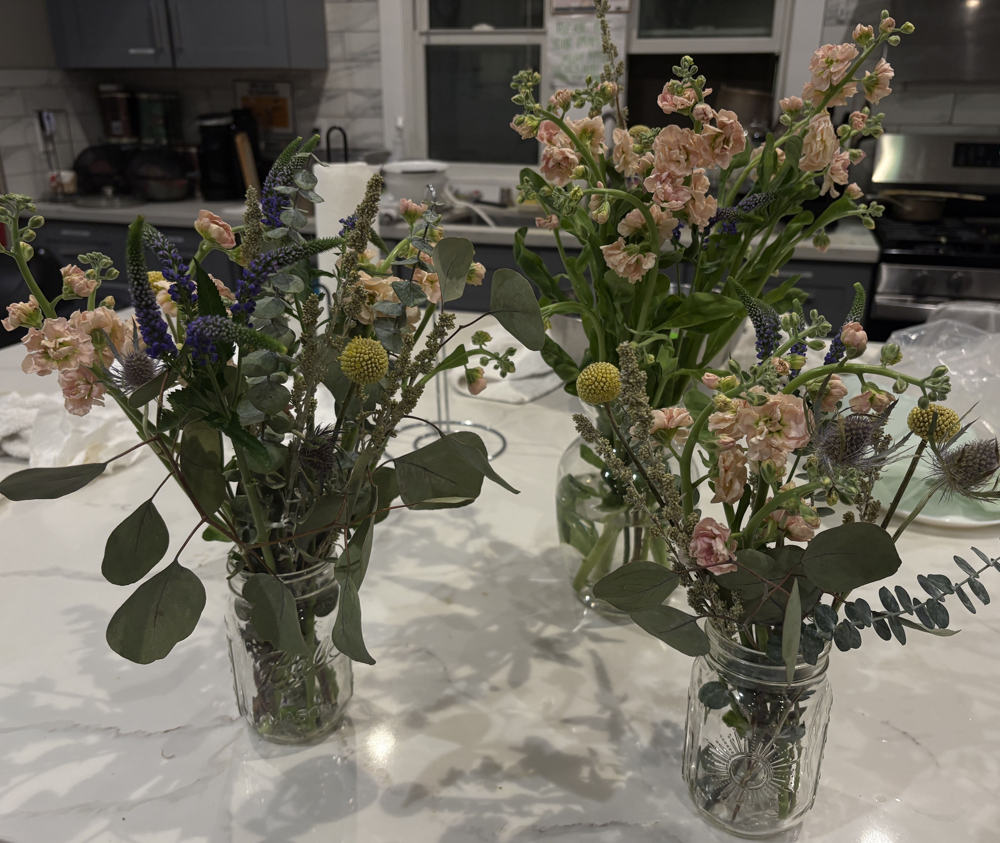
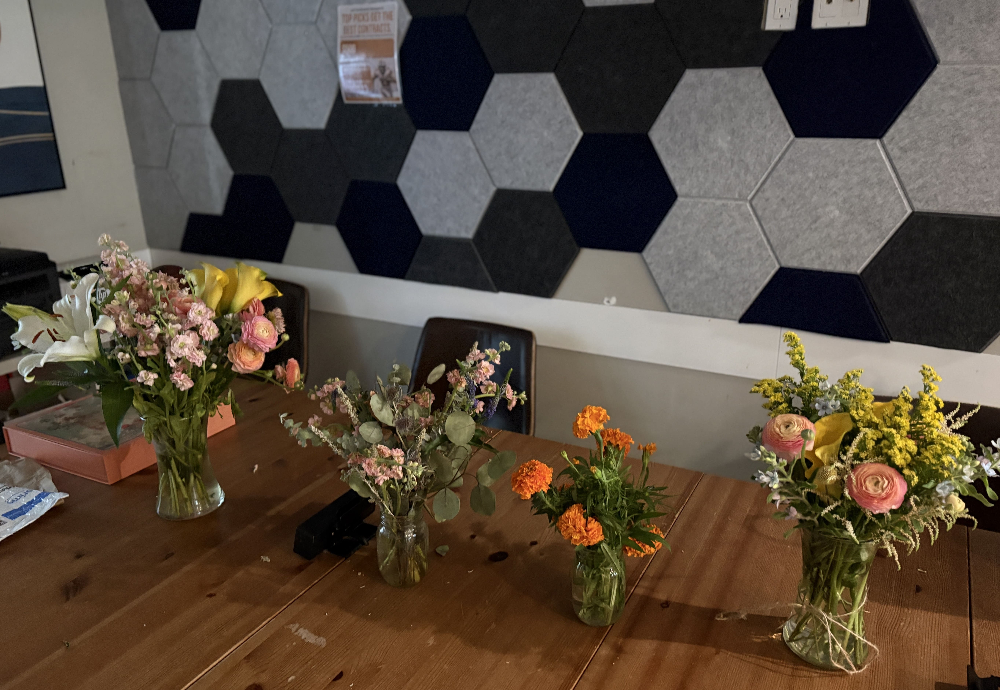
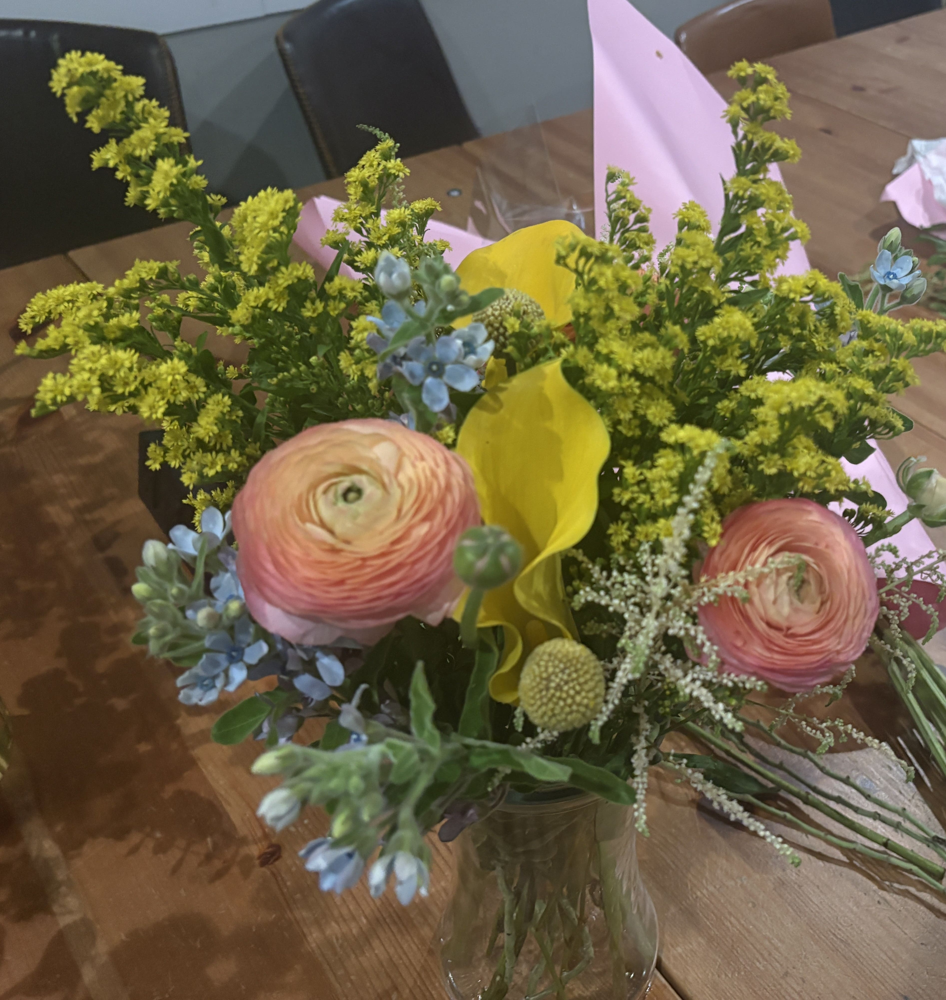
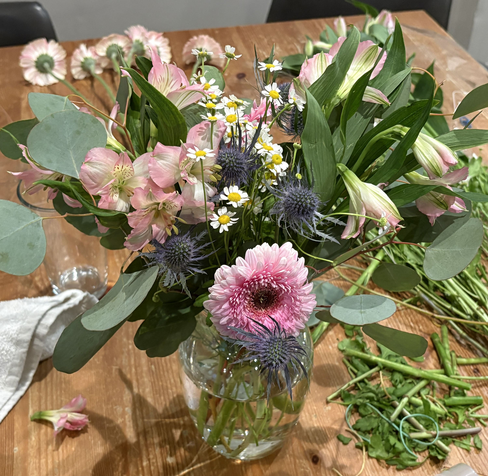
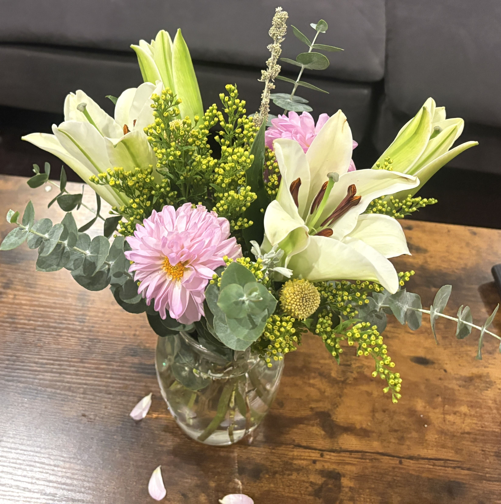
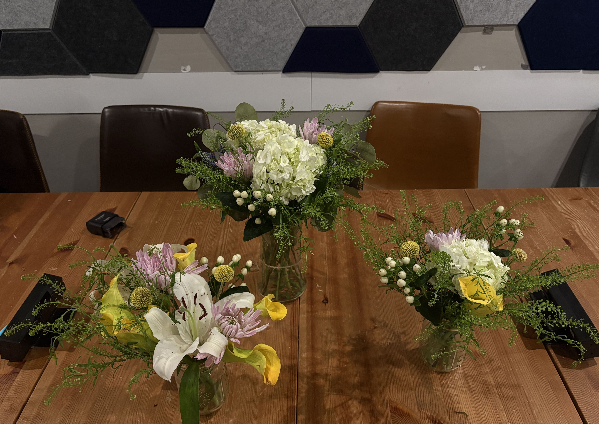
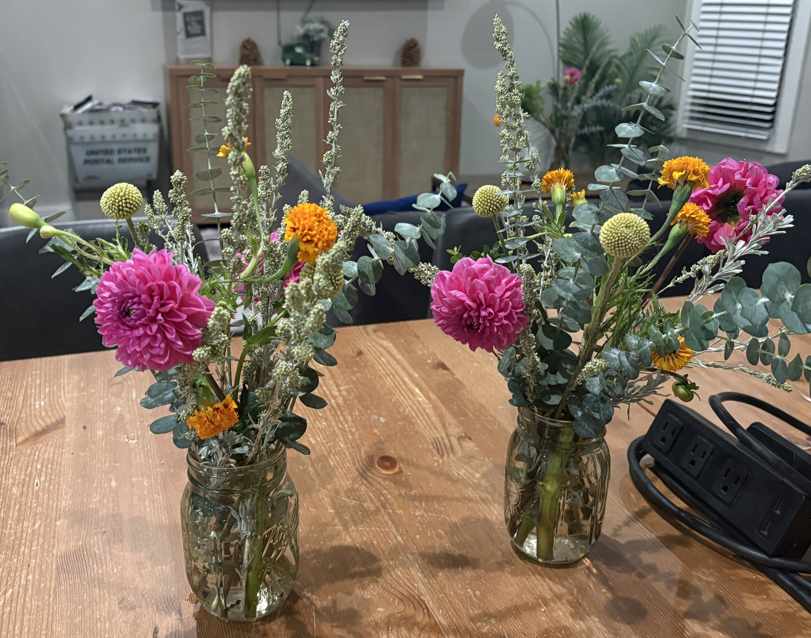
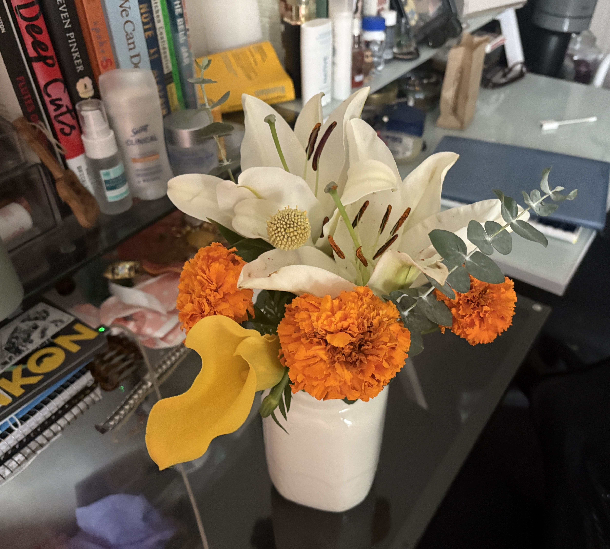
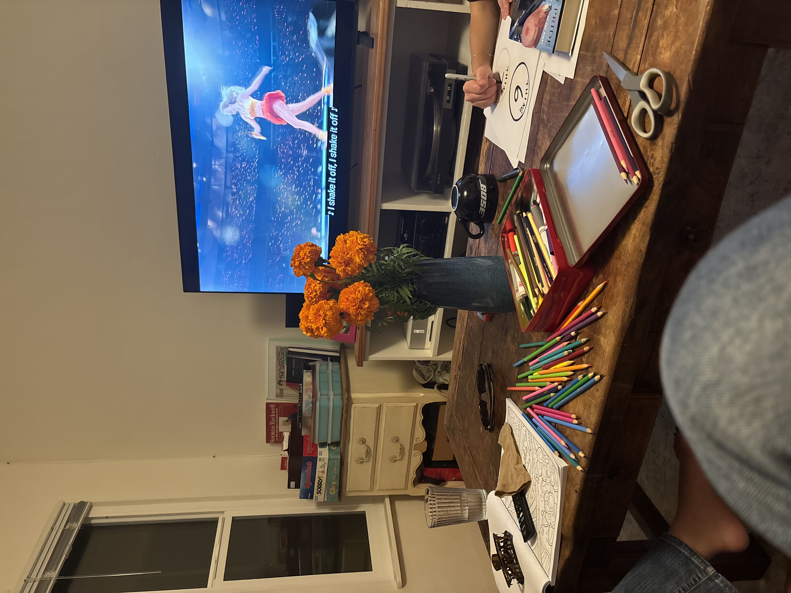
We hand-deliver every arrangement in climate-controlled transit across San Francisco, Marin County, the Napa Valley, and the East Bay. Same-day dispatch available for orders placed before 11:00 AM PST.